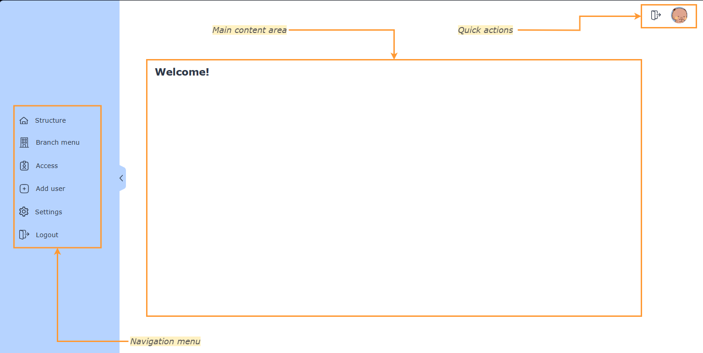
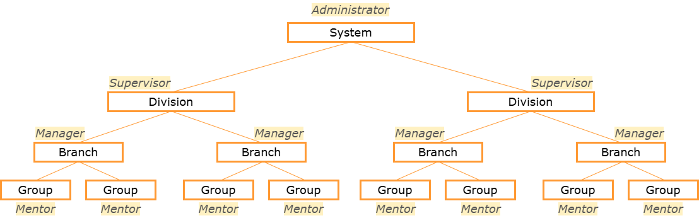
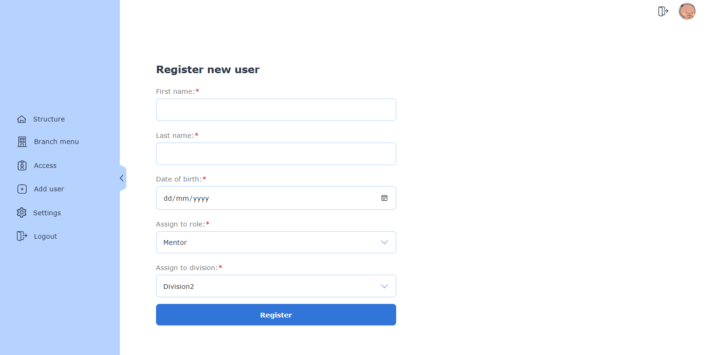
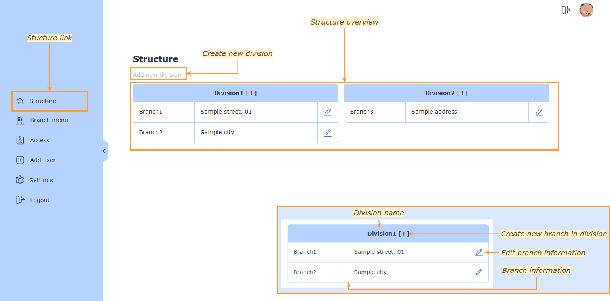
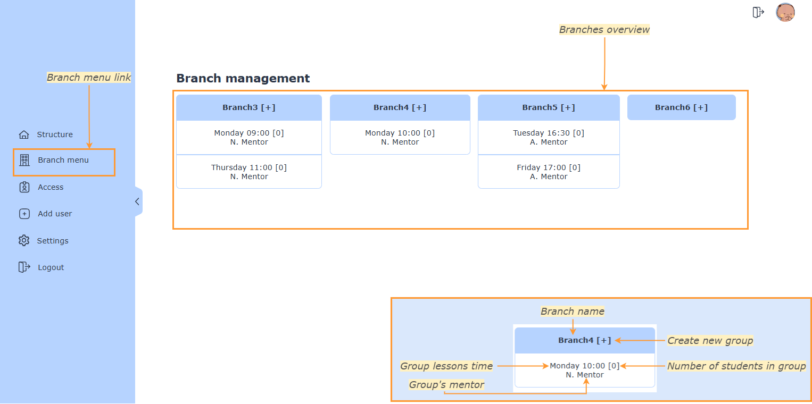
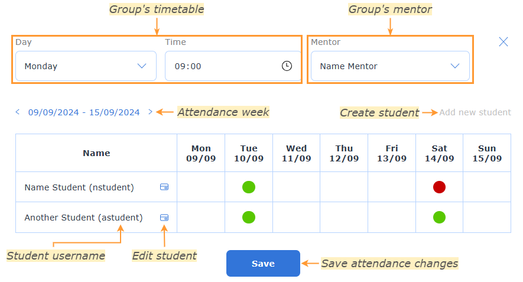
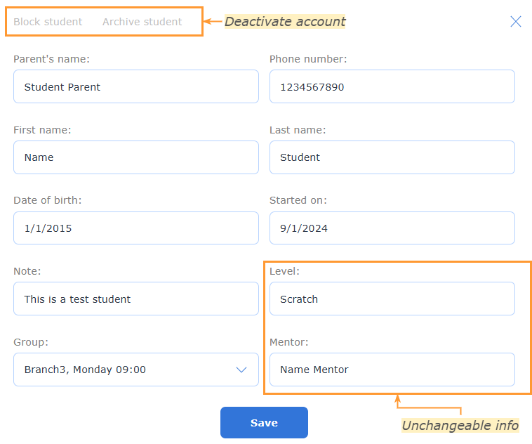
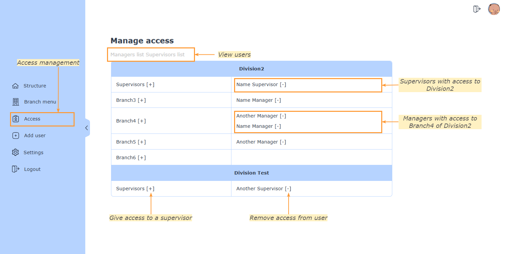
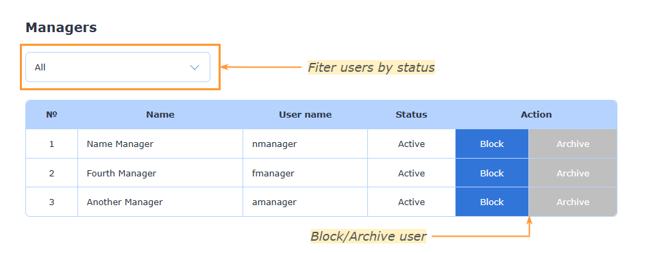
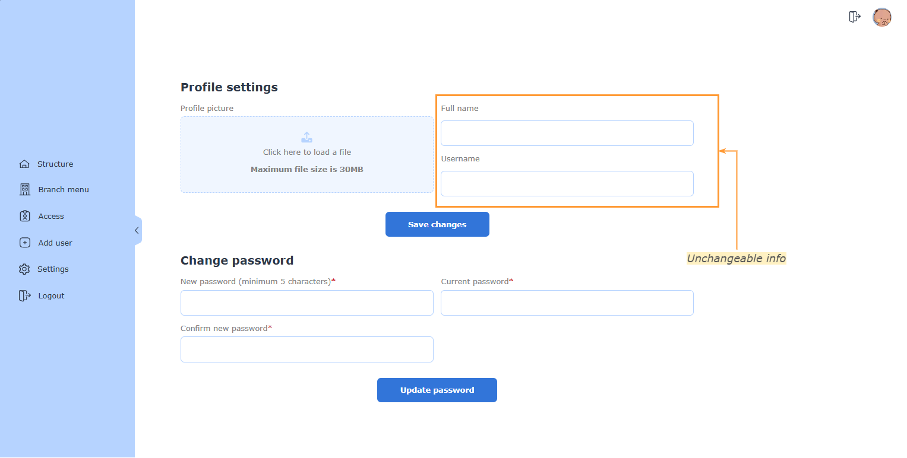

When you first log in to the app, you will see the following screen:

The app consists of the following elements:
Navigation bar
Main content area
Quick actions bar
Navigation bar
The navigation bar allows you to navigate through the app. It contains the following links:
Structure
Branch menu
Access
Add user
Settings
Logout
Navigation bar is opened by default, but if you want to toggle it, press the arrow icon.
Content area
The content area displays the main content of the app. It will change depending on which link you click in the navigation bar.
Quick actions bar
The quick actions bar contains two icons for "Log out" and "Home" links.
Structure of the system
The system is divided into the following sections:
Division
Branch
Group

Account status
Each user in the system has one of the following statuses:
Active
Blocked
Archived
Active users can log in to the system and perform actions. Blocked users cannot log in, but their data is still stored in the system. Archived users are hidden from the system and cannot log in.
Creating users
To create a new user, click on the "Add user" link in the navigation bar. You will see the following screen:

Fill in the form with the user's information and press "Create".
User login information is generated automatically and will be shown in the confirmation window. By default password is equal to username (must be changed by user after login).
If username happens to be too short to be set as a password, "1234" is added to the end of it. For example:
User named "James Potter" will have following credetials: "jpotter" as username, "jpotter" as password
User named "James Lee" will have following credentials: "jlee" as username, "jlee1234" as password
To create a user under the role "Mentor", you need to assign them a division from a drop-down list. This action is not needed to add Managers and Supervisors.
Managing the structure
To manage the structure of the system, click on the "Structure" link in the navigation bar. You will see the following screen:

Division management
To create a new division:
Press on "Add new division"
Enter the name of the division
Press "Create"
Wait for the confirmation and page reload
To edit an existing division:
Press on the name of the division you want to edit
Change the name of the division (name must not be empty)
Press "Save"
Wait for the confirmation and page reload
To delete an existing division:
Press on the name of the division you want to delete
Press "Delete"
Wait for the confirmation and page reload
Deleting a division will erase all the data of it's branches, groups and students. This data cannot be restored
Branch management
To create a new branch:
Press on a plus sign next to division name
Enter the name of the branch
Enter the address - it can be a locaiton or a description of the branch
Press "Create"
Wait for the confirmation and page reload
To edit an existing branch:
Press on the "Edit" icon next to the branch you want to edit
Change the name or address of the branch (name must not be empty)
Press "Save"
Wait for the confirmation and page reload
To delete an existing branch:
Press on the name of the branch you want to delete
Press "Delete"
Wait for the confirmation and page reload
Deleting a branch will erase all the data of it's groups and students. This data cannot be restored
Groups
Branches contain groups and students. Group is the lowest level of the system. To manage them, click on the "Branch menu" link in the navigation bar. You will see the following screen:

In this section you can create and edit groups, add new students and look over the attendance of each of them.
Group management
To create a new group:
Press on a plus sign next to branch name
Choose group's timetable and assign a mentor
Press "Create"
Wait for the confirmation and page reload
To edit an existing group:
Press on the group you want to edit
Change group's timetable or assigned mentor
Changes to group's settings are saved automatically (without pressing confirmation buttons) and cannot be restored to original values

Student management
To add a new student:
Press on a "Add new student" link in group view
Enter student's information
Press "Create"
Wait for the confirmation and page reload
To edit an existing student:
Press on a card icon next to the student you want to edit
You can change student's information
Press "Save"
Wait for the confirmation and page reload
To transfer student to another group:
Press on a card icon next to the student you want to edit
Choose a new group in "Group" drop-down menu
Press "Save"
Wait for the confirmation and page reload
To deactivate student's account:
Press on a card icon next to the student you want to block/archive
Press on "Block student" or "Archive student" to change account status
Wait for the confirmation
If you blocked a student, press "Save"
Blocked student will be shown with a lock icon next to the name
Archived student will no longer be visible in group view
Deactivating of an account does not lead to information loss, but removes an ability to log in

Access management
Access management allows you to control users and their access to the system. To manage access, click on the "Access" link in the navigation bar. You will see the following screen:

Access management
To add an access to a supervisor:
Press on a plus sign next to the "Supervisors" cell
Choose a supervisor in the drop-down menu
Press "Create"
Wait for the confirmation and page reload
To add an access to a manager:
Press on a plus sign next to a needed branch
Choose a manager in the drop-down menu
Press "Create"
Wait for the confirmation and page reload
To remove an access:
Press on a minus sign next to the name of a user
Wait for the confirmation and page reload
Users listings
Above the access management table you can see links to see users in the system in roles "Manager" and "Supervisor". Press on the link to see the listing of users.

On this page you can block/unblock and archive/restore user accounts by pressing the corresponding action cell
Profile settings
To change your profile settings, click on the "Settings" link in the navigation bar. You will see the following screen:

Here you can change your password and profile picture. It is not possible to change any other personal information